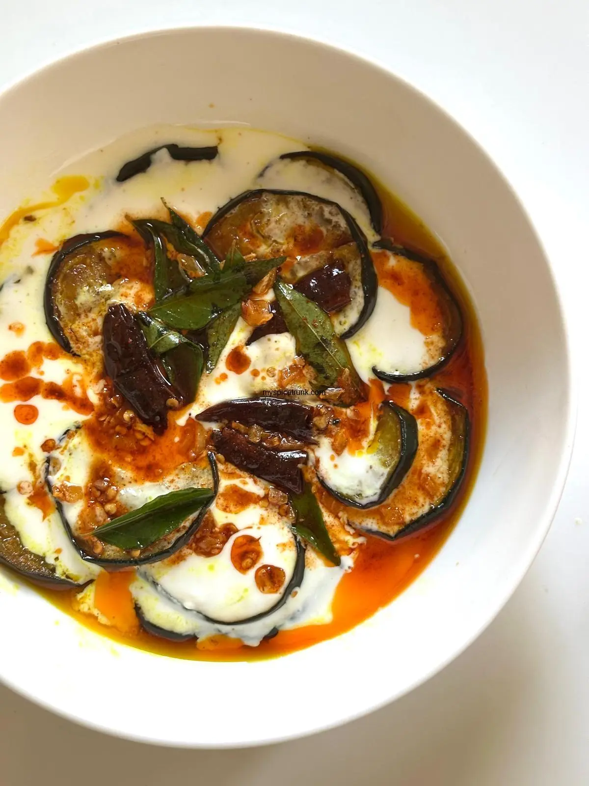

Doi Begun has thick, golden-crusted discs of tender eggplant, shallow-fried in pungent mustard oil until the edges are caramelized and the flesh is velvety soft. It has a luxurious, glossy gravy of slow-simmered, whisked yogurt that is richly creamy yet light. It has the sharp, aromatic warmth of cracked cardamom, cloves, and cinnamon, paired with a whisper of earthy hing and a touch of sugar to balance the yogurt’s vibrant tang. It has tender eggplant rounds acting like sponges, soaked completely through with the spiced, velvety sauce until they are practically bursting. It has a finishing gloss of aromatic ghee, fresh heat from slit green chilies, and a dusting of roasted Bengali spices blooming in the steam. It is a vibrant, oil-glistening curry that sits perfectly next to a mound of steaming hot, fluffy basmati rice.